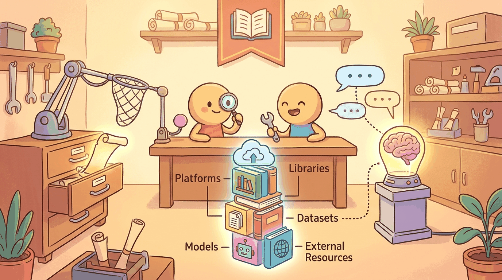

"A retrieval system is a library where the books rearrange themselves every time you walk in."
Author's notebook
Part V built RAG: chunking, embedding, vector search, reranking, hybrid search, and conversation memory. This chapter is the catalog. The vector databases (FAISS, Chroma, Pinecone, Weaviate, Qdrant, pgvector), the embedding models (sentence-transformers, OpenAI's text-embedding-3, Cohere Embed v3), and the framework layer (LangChain, LlamaIndex, Haystack) that wires them together.
If you want a working RAG in under 50 lines:
pip install langchain chromadb sentence-transformersThe LangChain tutorial gets you from "PDF on disk" to "answer with citations" in a single notebook. For production, swap Chroma for Qdrant or Pinecone and add a reranker. Appendix D covers the LangChain idioms; Appendix E covers the broader ecosystem.
Sections in This Chapter
What Comes Next
Part VI turns to agents: planning, tool use, multi-agent systems, and the protocol stack (MCP, A2A, AG-UI) that lets agents talk to each other and to the world. Chapter 30 closes Part VI with the agent toolbox.